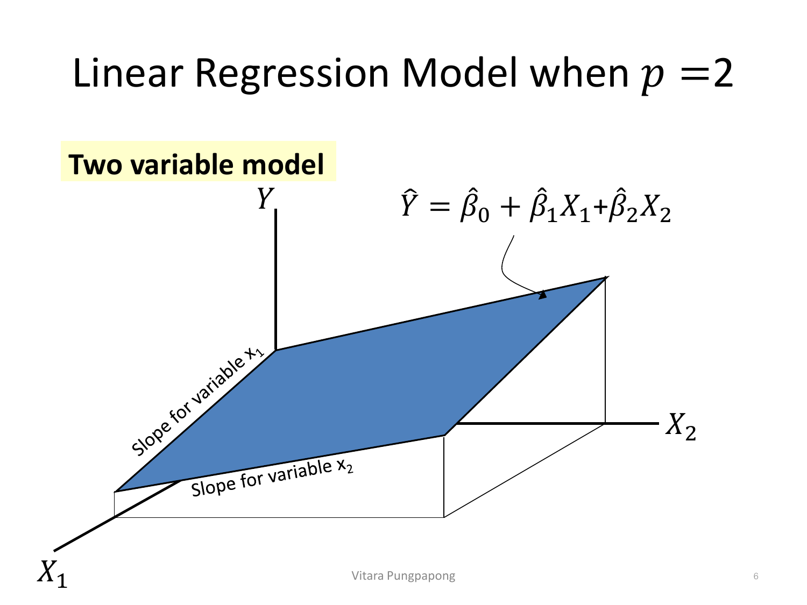
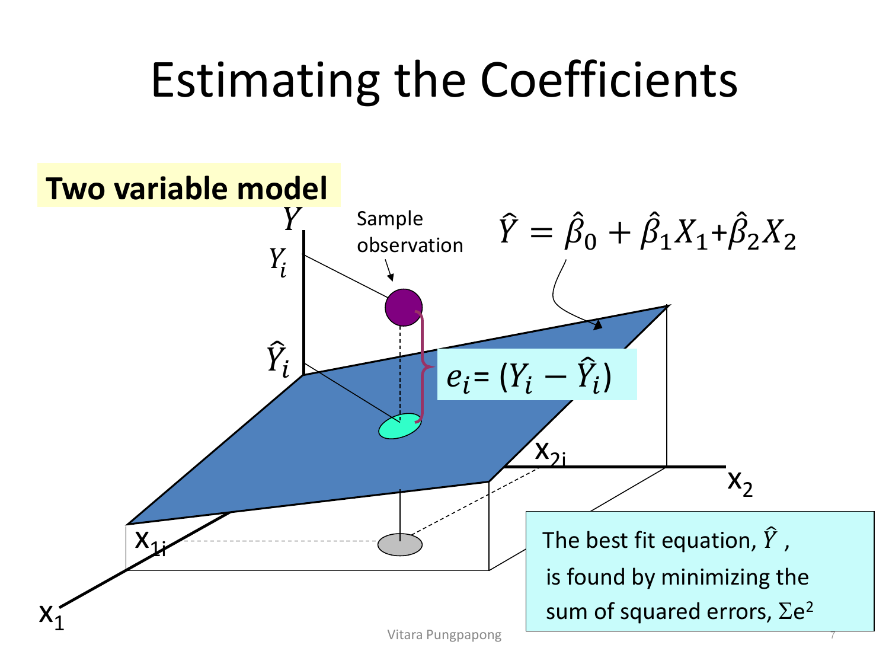
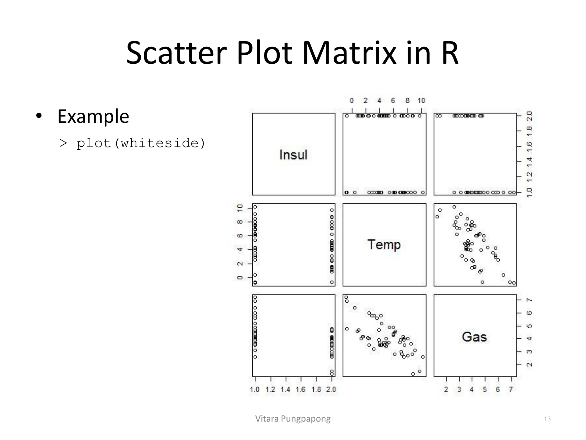
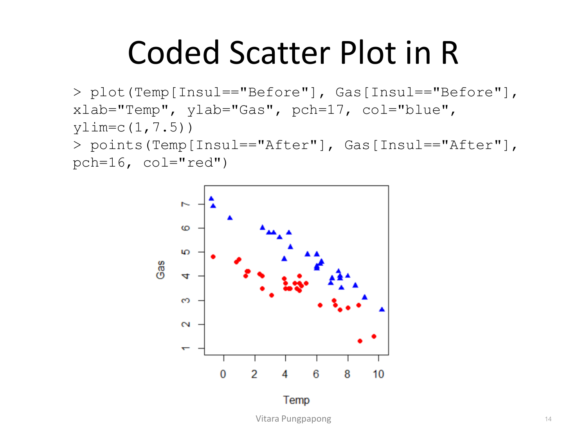
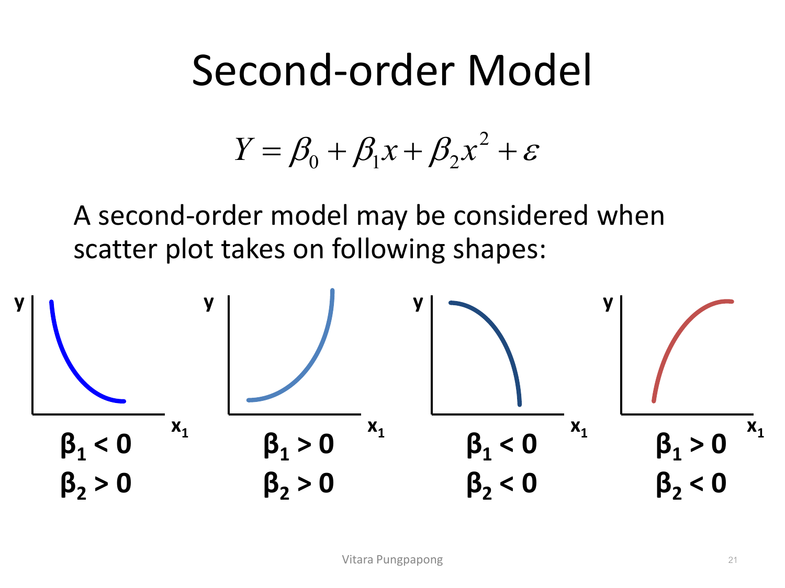
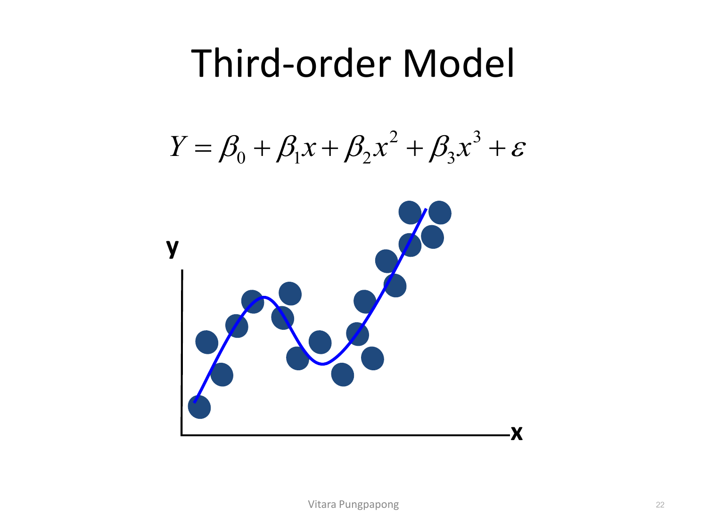
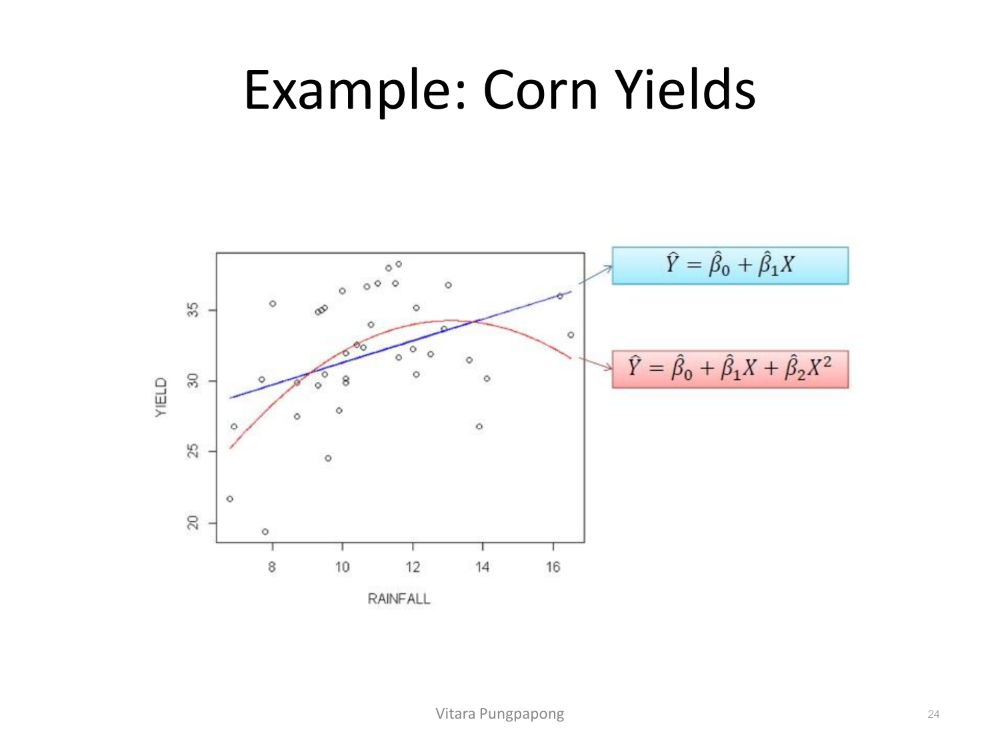
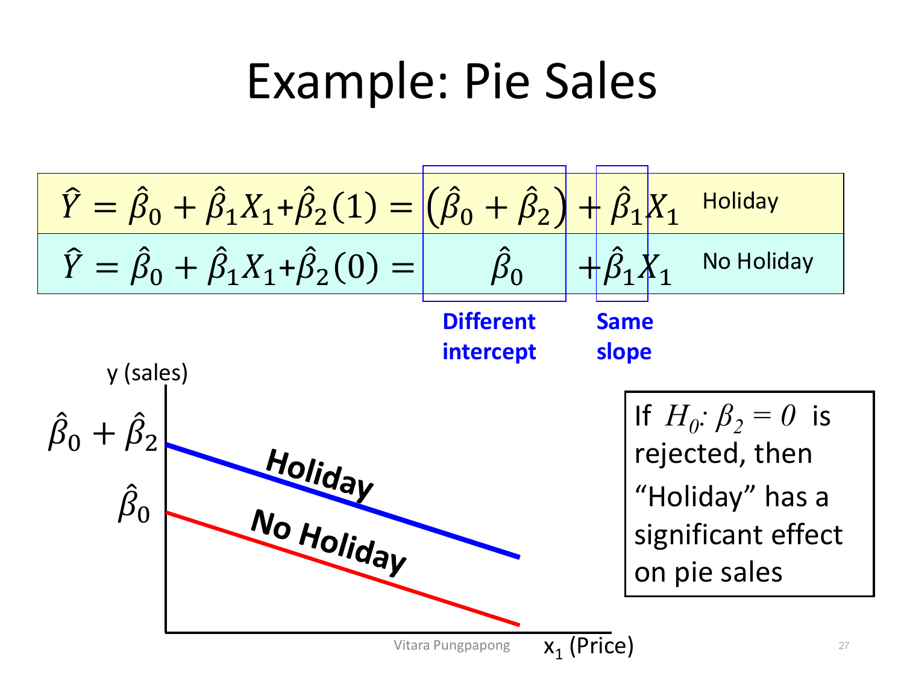

Lecture 2 — Multiple Linear Regression
บทเรียนนี้ต่อยอดจาก Lesson 1: Simple Linear Regression ตรง ๆ — ทุกอย่างที่ทำได้กับ X ตัวเดียว ตอนนี้ต้องทำได้กับ X หลายตัวพร้อมกัน ทักษะที่ต้องได้จากบทนี้: เขียนสมการ MLR ถูก (พร้อมรู้ว่าพารามิเตอร์มีกี่ตัว), แปลผลสัมประสิทธิ์แบบ "holding other variables constant" — ทักษะใหม่ที่ SLR ไม่มีและเป็นจุดที่ข้อสอบเช็คหนักที่สุดในบทนี้, อ่าน output จาก summary(lm(...)) ที่มีหลายแถว รวมถึง extra-sum-of-squares F-test และ ANOVA table ที่ซับซ้อนขึ้น, และเข้าใจตัวแปรเชิงกลุ่ม (dummy variable) และ interaction term ซึ่งเป็นของใหม่ที่ SLR ไม่มีเลย.
เป้าหมายของ regression ไม่เปลี่ยนจาก Lesson 1: (1) อธิบายความสัมพันธ์ (association) ระหว่างชุดตัวแปรอิสระ \(X_1, X_2, \ldots, X_p\) กับ Y และ (2) ทำนายค่า Y ในอนาคตจากชุดตัวแปรนั้น — ความแตกต่างเดียวคือตอนนี้มี X ได้มากกว่า 1 ตัวพร้อมกัน ไม่ใช่ความสัมพันธ์เชิงเหตุผล (causal) เว้นแต่ข้อมูลมาจาก randomized experiment เหมือนที่เน้นไว้ในหัวข้อ 2 ของ Lesson 1 ทุกประการ.
\(X_1, X_2, \ldots, X_p\) เรียก independent/explanatory variables (ตอนนี้มี p ตัว ไม่ใช่ตัวเดียว), Y ยังคงเรียก dependent/response variable เหมือนเดิม — และในตอนนี้ให้สมมติว่าทั้ง X และ Y เป็นตัวแปรเชิงปริมาณ (quantitative) ก่อน ค่อยขยายไปเป็นตัวแปรเชิงกลุ่มในหัวข้อ 9.
ข้อมูลตอนนี้เป็น \(Y_i, X_{i1}, \ldots, X_{ip}\) สำหรับ \(i = 1, 2, \ldots, n\) (แต่ละแถว i มีค่า X ให้ครบ p ตัว ไม่ใช่ตัวเดียวเหมือน SLR) และสมการถดถอยเชิงเส้นพหุคูณเขียนเป็น:
เทียบกับสมการ SLR จาก Lesson 1 (\(Y_i = \beta_0 + \beta_1 X_i + \varepsilon_i\)) โครงสร้างเหมือนเดิมทุกอย่าง — มี intercept, มีพจน์เชิงเส้นของแต่ละ X, มี error term ท้ายสุดที่ assumption 4 ข้อเดียวกัน (mean zero, independent, constant variance, normal) — สิ่งที่เพิ่มมาอย่างเดียวคือจำนวนพจน์สัมประสิทธิ์: จาก 1 ตัว (β₁) กลายเป็น p ตัว (β₁ ถึง β_p) และ β₀, β₁, …, β_p ยังคงเป็นพารามิเตอร์ทฤษฎีที่ไม่รู้ค่าจริง ต้องประมาณจากข้อมูลตัวอย่างเป็น \(\hat{\beta}_0, \hat{\beta}_1, \ldots, \hat{\beta}_p\) เหมือนกฎเรื่องหมวกที่เน้นไว้ใน Lesson 1.
\(Price_i = \beta_0 + \beta_1\, Area_i + \beta_2\, Bedroom_i + \beta_3\, Distance_i + \varepsilon_i\), สำหรับ i = 1,…,80
มีพารามิเตอร์ 4 ตัว (p=3 ตัวแปรอิสระ + 1 intercept): \(\beta_0\) = ราคาคาดการณ์เมื่อ Area=0, Bedroom=0, Distance=0 (มักไม่มีความหมายทางปฏิบัติ เพราะ extrapolation), \(\beta_1\) = ราคาที่เปลี่ยนไปโดยเฉลี่ยเมื่อ Area เพิ่ม 1 ตร.ม. โดยคุมจำนวนห้องนอนและระยะทางจาก BTS ให้คงที่, \(\beta_2\) และ \(\beta_3\) ตีความแบบเดียวกันกับตัวแปรของตัวเอง โดยคุมอีกสองตัวให้คงที่, \(\varepsilon_i\) = ความคลาดเคลื่อนของบ้านหลังที่ i ที่โมเดลอธิบายไม่ได้ (\(\varepsilon_i \sim \text{iid } N(0,\sigma^2)\))
ในกรณี p=1 (Lesson 1) เราวาดเส้นถดถอยบนระนาบ 2 มิติได้ตรง ๆ (\(\hat{Y} = \hat{\beta}_0 + \hat{\beta}_1 X_1\)) — พอมี X ตัวที่สองเข้ามา (p=2) สมการกลายเป็น \(\hat{Y} = \hat{\beta}_0 + \hat{\beta}_1 X_1 + \hat{\beta}_2 X_2\) ซึ่งวาดในพื้นที่ 3 มิติ (แกน Y, X₁, X₂) แล้วไม่ได้เป็นเส้นตรงอีกต่อไป แต่เป็นระนาบ (plane):

สังเกตภาพ: มีความชัน (slope) แยกกัน 2 ตัว ในระนาบเดียวกัน — "Slope for variable x₁" (ทิศทางเดินตามแกน X₁) และ "Slope for variable x₂" (ทิศทางเดินตามแกน X₂) — นี่คือที่มาของกฎการแปลผลที่จะเจอตลอดบทนี้: \(\hat{\beta}_1\) วัดความชันไปตามแกน X₁ เมื่อ X₂ ถูกตรึงไว้คงที่ (เพราะถ้า X₂ เปลี่ยนด้วย จุดจะเคลื่อนไปคนละทิศบนระนาบ ไม่ใช่แค่ตามแกน X₁) และ \(\hat{\beta}_2\) ก็เช่นกันในทิศตรงข้าม — ระนาบมีความชัน 2 ทิศพร้อมกันได้ในเวลาเดียวกัน ต่างจากเส้นตรงที่มีความชันทิศเดียว.
ส่วน residual ก็นิยามแบบเดียวกับ SLR เป๊ะ เพียงแต่วัดระยะห่างจากจุดข้อมูลถึงระนาบแทนที่จะเป็นเส้นตรง:

จุดสังเกตสำคัญ: \(e_i = (Y_i - \hat{Y}_i)\) ยังคงเป็นระยะทางแนวตั้ง (ตามแกน Y เท่านั้น) จากจุดสังเกตจริง \(Y_i\) ลงมาที่ระนาบทำนาย \(\hat{Y}_i\) ที่ตำแหน่ง \((x_{1i}, x_{2i})\) เดียวกัน — นิยามเดียวกับ SLR ทุกประการ, และ OLS ก็ยังคงหา \(\hat{\beta}_0, \hat{\beta}_1, \ldots, \hat{\beta}_p\) ที่ทำให้ \(\sum e_i^2\) น้อยที่สุดเหมือนเดิม เพียงแต่ตอนนี้กำลังหาระนาบ (หรือ hyperplane เมื่อ p≥3) ที่ดีที่สุด แทนที่จะเป็นเส้นตรง.
plot(x, y, type=...) ยังใช้ได้เหมือนเดิม โดยมี argument type เพิ่มเข้ามาเลือกรูปแบบเส้น/จุด ("p"=points, "l"=lines, "b"=both ฯลฯ) — ส่วน graphical parameters cex, pch, lty/lwd เหมือนที่สรุปไว้แล้วในตารางอ้างอิงของ Lesson 1 ทุกประการ ไม่มีอะไรใหม่ให้ทำ quiz เพิ่มตรงนี้.
ตัวอย่างที่จะใช้ตลอดครึ่งแรกของบทเรียนนี้คือชุดข้อมูล whiteside (จากแพ็กเกจ MASS) — วัดการใช้แก๊ส (Gas) เทียบกับอุณหภูมิภายนอก (Temp) ของบ้านหลังหนึ่ง ก่อนและหลังติดฉนวนกันความร้อน (Insul = "Before"/"After"):
> library(MASS)
> data(whiteside)
> head(whiteside)
Insul Temp Gas
1 Before -0.8 7.2
2 Before -0.7 6.9
3 Before 0.4 6.4
4 Before 2.5 6.0
5 Before 2.9 5.8
6 Before 3.2 5.8สังเกตว่า Insul เป็นตัวแปรเชิงกลุ่ม (categorical, 2 ระดับ) — จะกลับมาขยายผลเรื่องนี้เต็ม ๆ ในหัวข้อ 9 เมื่อพูดถึง dummy variable แต่ตอนนี้ให้โฟกัสที่ Temp กับ Gas ก่อน (ทั้งคู่เป็นตัวแปรเชิงปริมาณ).
ก่อนฟิตโมเดลใด ๆ ควรสำรวจความสัมพันธ์ระหว่างทุกคู่ตัวแปรพร้อมกันด้วย scatter plot matrix — plot(whiteside) วาด scatter plot ของทุกคู่ตัวแปรในหนึ่งตาราง (n×n panel):

อ่านตาราง 3×3 นี้: แผงกลาง-ขวา (Temp แถว, Gas คอลัมน์ หรือกลับกัน) แสดงความสัมพันธ์เชิงลบชัดเจนระหว่าง Temp กับ Gas — อากาศยิ่งอุ่น ใช้แก๊สยิ่งน้อย ตามสามัญสำนึก. ส่วนแผงที่เกี่ยวกับ Insul (แถว/คอลัมน์บนสุด) จะเห็นจุดเรียงเป็นสองแถบแนวตั้ง/แนวนอน เท่านั้น (ที่ตำแหน่ง 1 กับ 2 บนแกน) เพราะ Insul มีแค่ 2 ค่าที่เป็นไปได้ ไม่ใช่ตัวเลขต่อเนื่อง — สัญญาณนี้บอกได้ทันทีว่า Insul ต้องถูกจัดการต่างจาก Temp เมื่อเอาเข้าโมเดล.
เพื่อดูว่า Insul มีผลต่อความสัมพันธ์ Temp-Gas อย่างไร ให้ระบายสี/สัญลักษณ์ต่างกันตามกลุ่ม:
> plot(Temp[Insul=="Before"], Gas[Insul=="Before"],
+ xlab="Temp", ylab="Gas", pch=17, col="blue", ylim=c(1,7.5))
> points(Temp[Insul=="After"], Gas[Insul=="After"],
+ pch=16, col="red")
อ่านภาพนี้ให้ละเอียด: ที่ Temp ใกล้เคียงกัน (เช่นรอบ ๆ 4) จุดสีน้ำเงิน (Before) อยู่สูงกว่าจุดสีแดง (After) อย่างชัดเจนตลอดช่วง — ทั้งสองกลุ่มมีแนวโน้มลาดลง (slope เป็นลบ) แบบใกล้เคียงกัน แต่ระดับ (level) ของกลุ่ม Before สูงกว่า After สม่ำเสมอ ราวกับเส้นสองเส้นที่ขนานกันแต่อยู่คนละความสูง — นี่คือรูปร่างที่ dummy variable "แตกต่างที่ intercept แต่ slope เท่ากัน" จะให้ผลลัพธ์ (จะพิสูจน์ด้วยตัวเลขจริงในหัวข้อ 9) ก่อนจะยืนยันด้วยการ interaction term ในหัวข้อ 11 ว่าจริง ๆ แล้ว slope ของสองกลุ่มต่างกันเล็กน้อยด้วยหรือไม่.
สไลด์มีตัวเลือกพล็อตแบบเดียวกันด้วย ggplot2 (ggplot(whiteside, aes(x=Temp,y=Gas,color=Insul)) + geom_point()) ซึ่งให้ภาพเดียวกันเป๊ะแค่ syntax คนละแบบ — ไม่มีเนื้อหาทฤษฎีใหม่ สรุปไว้ในตารางอ้างอิงแล้ว.
lm(): ตัวอย่าง Whiteside's Datalm(formula, data, subset, weights, na.action) — argument เดียวกับ SLR ทุกตัว รวมถึง subset ที่ให้ระบุเลือกฟิตเฉพาะบางแถวของข้อมูล ซึ่งเป็นวิธีง่ายที่สุดที่จะ "แยกฟิต" สองกลุ่มออกจากกันโดยไม่ต้องยุ่งกับ dummy variable เลย:
> modelBefore<-lm(Gas~Temp, data=whiteside, subset=(Insul=="Before"))
> modelAfter<-lm(Gas~Temp, data=whiteside, subset=(Insul=="After"))ผลของ modelBefore:
> print(modelBefore)
Call:
lm(formula = Gas ~ Temp, data = whiteside, subset = (Insul == "Before"))
Coefficients:
(Intercept) Temp
6.8538 -0.3932
> anova(modelBefore)
Analysis of Variance Table
Response: Gas
Df Sum Sq Mean Sq F value Pr(>F)
Temp 1 31.905 31.905 403.11 < 2.2e-16 ***
Residuals 24 1.900 0.079และผลเต็มของ modelAfter (นี่คือ output รูปแบบเดียวกับ Lesson 1 เป๊ะ อ่านทุกบรรทัดแบบเดิม):
> summary(modelAfter)
Call:
lm(formula = Gas ~ Temp, data = whiteside, subset = (Insul == "After"))
Residuals:
Min 1Q Median 3Q Max
-0.97802 -0.11082 0.02672 0.25294 0.63803
Coefficients:
Estimate Std. Error t value Pr(>|t|)
(Intercept) 4.72385 0.12974 36.41 < 2e-16 ***
Temp -0.27793 0.02518 -11.04 1.05e-11 ***
---
Signif. codes: 0 '***' 0.001 '**' 0.01 '*' 0.05 '.' 0.1 ' ' 1
Residual standard error: 0.3548 on 28 degrees of freedom
Multiple R-squared: 0.8131, Adjusted R-squared: 0.8064
F-statistic: 121.8 on 1 and 28 DF, p-value: 1.046e-11อ่านตัวเลข: สมการของกลุ่ม After คือ \(\widehat{Gas} = 4.72385 - 0.27793 \times Temp\) ในขณะที่กลุ่ม Before คือ \(\widehat{Gas} = 6.8538 - 0.3932 \times Temp\) — ทั้ง intercept และ slope ต่างกันเล็กน้อยระหว่างสองกลุ่ม (Before ใช้แก๊สตั้งต้นสูงกว่า และลดลงเร็วกว่าเมื่ออุณหภูมิเพิ่มด้วย) — จำตัวเลขชุดนี้ไว้ให้แม่น (6.8538, -0.3932, 4.72385, -0.27793) เพราะในหัวข้อ 11 จะฟิตโมเดล MLR ตัวเดียวที่รวมทั้งสองกลุ่มเข้าด้วยกัน แล้วพิสูจน์ด้วยตัวเลขจริงว่าได้ผลลัพธ์เดียวกันเป๊ะกับการแยกฟิตแบบนี้.
สไลด์เปิดหัวข้อนี้ด้วยข้อความสำคัญ: X ใน MLR ไม่จำเป็นต้องเป็นแค่ตัวแปรเชิงปริมาณดิบ ๆ เท่านั้น แต่เป็นได้ 4 แบบ: (1) quantitative regressor เดิม เช่น age, income (2) transformed regressor เช่น age², log(income) (3) categorical predictor (coded เป็น 0/1 dummy) (4) interaction ของ regressor เช่น (treatment × gender) — สามข้อหลังคือของใหม่ที่ SLR ไม่มี และจะเป็นหัวข้อหลักของบทนี้ที่เหลือ.
เริ่มจาก transformed regressor แบบ polynomial — สังเกตว่าโมเดลกำลังสอง/สามยังคง "เชิงเส้น" อยู่ในความหมายของ linear regression เพราะเชิงเส้นในที่นี้หมายถึงเชิงเส้นในพารามิเตอร์ β ไม่ใช่เชิงเส้นในรูปร่างกราฟ:
โมเดลกำลังสองใช้เมื่อ scatter plot โค้งแบบพาราโบลา (จุดเปลี่ยนทิศทางครั้งเดียว) — ทิศทางของความโค้งขึ้นกับเครื่องหมายของ \(\beta_1\) และ \(\beta_2\) ร่วมกัน:

0), increasing convex (beta1>0, beta2>0), decreasing concave (beta1<0, beta2<0), increasing concave (beta1>0, beta2<0)">อ่านภาพ: กราฟซ้ายสุด (\(\beta_1<0, \beta_2>0\)) ลดลงเร็วช่วงต้นแล้วค่อย ๆ แบนราบ (ความชันติดลบแต่กำลังอ่อนแรงลงเรื่อย ๆ) — สัญลักษณ์ของ \(\beta_2>0\) คือ "แรงต้าน" ที่ค่อย ๆ ดึงความชันให้เพิ่มขึ้น (จากลบมากไปลบน้อย) เมื่อ x โต. ส่วนกราฟขวาสุด (\(\beta_1>0, \beta_2<0\)) คือรูปแบบ "ผลตอบแทนลดลง" (diminishing returns) แบบคลาสสิก — เพิ่มขึ้นเร็วตอนแรกแล้วชะลอตัว, พบบ่อยมากในข้อมูลเศรษฐศาสตร์/ธุรกิจ. โมเดลกำลังสามใช้เมื่อกราฟมีจุดเปลี่ยนทิศทางสองครั้ง (ขึ้น-ลง-ขึ้น หรือ ลง-ขึ้น-ลง):

สังเกตจุดข้อมูลในภาพ: เริ่มต่ำ ไต่ขึ้นถึงจุดสูงสุดท้องถิ่น (local peak) ราวกลางกราฟ แล้วลดลงเป็นจุดต่ำสุดท้องถิ่น (local trough) ก่อนจะไต่ขึ้นอีกครั้งช่วงปลาย — เส้นโค้งสีน้ำเงินรูปตัว S คดเคี้ยวนี้คือสิ่งที่พจน์ \(\beta_3\) ทำได้แต่ \(\beta_2\) ทำไม่ได้ (พาราโบลามีจุดเปลี่ยนทิศทางได้แค่ครั้งเดียวเท่านั้น).
ข้อมูลจริง: ผลผลิตข้าวโพด (YIELD) เทียบกับปริมาณน้ำฝน (RAINFALL) จาก 6 รัฐในสหรัฐฯ ปี 1890-1927:
> corn<-read.csv("corn.csv")
> head(corn)
YEAR YIELD RAINFALL
1 1890 24.5 9.6
2 1891 33.7 12.9
3 1892 27.9 9.9
4 1893 27.5 8.7
5 1894 21.7 6.8
6 1895 31.9 12.5
> attach(corn)
> plot(RAINFALL, YIELD)ฟิตทั้งเส้นตรง (SLR) และเส้นโค้งกำลังสอง (quadratic) ทับข้อมูลชุดเดียวกันเพื่อเปรียบเทียบ:

อ่านภาพ: เส้นตรงสีน้ำเงิน (SLR) ไต่ขึ้นตลอดทั้งช่วงแบบไม่หยุด แต่จุดข้อมูลจริงบอกว่าที่ RAINFALL สูงมาก (เกิน ~14) YIELD กลับทรงตัวหรือลดลงเล็กน้อย ไม่ได้เพิ่มต่อเนื่อง — เส้นโค้งสีแดง (quadratic, \(\beta_1>0, \beta_2<0\)) ตามรูปทรงนี้ได้แม่นกว่าชัดเจน โดยขึ้นถึงจุดสูงสุดแล้วค่อยลาดลงเล็กน้อยที่ปลาย — ฝนน้อยไปก็ไม่พอ ฝนมากไปก็เริ่มท่วม/ชะล้างสารอาหาร ตรงกับสามัญสำนึกทางการเกษตร (diminishing returns ที่เห็นในหัวข้อ 7).
ฟิตโมเดลกำลังสองด้วย \(x^2\) (สังเกต I(RAINFALL^2) ที่บังคับให้ R ตีความ ^2 เป็นการยกกำลังทางคณิตศาสตร์จริง ไม่ใช่ formula operator ที่จะอธิบายในหัวข้อ 10):
> model<-lm(YIELD~RAINFALL+I(RAINFALL^2), data=corn)
> summary(model)
Call:
lm(formula = YIELD ~ RAINFALL + I(RAINFALL^2), data = corn)
Residuals:
Min 1Q Median 3Q Max
-8.4642 -2.3236 -0.1265 3.5151 7.1597
Coefficients:
Estimate Std. Error t value Pr(>|t|)
(Intercept) -5.01467 11.44158 -0.438 0.66387
RAINFALL 6.00428 2.03895 2.945 0.00571 **
I(RAINFALL^2) -0.22936 0.08864 -2.588 0.01397 *
---
Signif. codes: 0 '***' 0.001 '**' 0.01 '*' 0.05 '.' 0.1 ' ' 1
Residual standard error: 3.763 on 35 degrees of freedom
Multiple R-squared: 0.2967, Adjusted R-squared: 0.2565
F-statistic: 7.382 on 2 and 35 DF, p-value: 0.002115อ่านตัวเลข: สมการที่ได้คือ \(\widehat{YIELD} = -5.01467 + 6.00428 \times RAINFALL - 0.22936 \times RAINFALL^2\) — เครื่องหมาย \(\hat{\beta}_1>0, \hat{\beta}_2<0\) ตรงกับรูปแบบ "diminishing returns" (กราฟขวาสุด) ในหัวข้อ 7 เป๊ะ. สังเกตว่า \(\hat{\beta}_0\) มี p-value = 0.66387 (ไม่มีนัยสำคัญ) แต่ RAINFALL และ I(RAINFALL^2) มีนัยสำคัญทั้งคู่ (p=0.00571 และ 0.01397) — ข้อควรระวัง: ในโมเดล polynomial ห้ามตัด intercept ทิ้งแม้จะไม่มีนัยสำคัญ เพราะ RAINFALL กับ RAINFALL² เป็นตัวแปรเดียวกัน (ไม่ใช่ตัวแปรอิสระสองตัวที่ไม่เกี่ยวกัน) การตัดพจน์ใดพจน์หนึ่งทิ้งจะบิดรูปทรงของเส้นโค้งทั้งเส้น ไม่ใช่แค่เลื่อนระดับเหมือนตัดตัวแปรอิสระธรรมดา.
สำหรับตัวแปรอิสระที่เป็นเชิงกลุ่ม (nominal/categorical) เช่น Insul ในหัวข้อ 4-6 ต้องสร้างตัวแปรบ่งชี้ (indicator/dummy variable) ก่อน — ตัวแปรที่รับค่าได้แค่ 0 หรือ 1 เท่านั้น ตัวแปรเชิงกลุ่มที่มี 2 ระดับใช้ dummy 1 ตัวพอ ส่วนตัวแปรที่มี k ระดับต้องใช้ dummy (k−1) ตัว (กัน multicollinearity สมบูรณ์แบบระหว่าง dummy กับ intercept — จะเจอรายละเอียดเพิ่มใน Lecture ถัดไป).
ตัวอย่าง: ยอดขายพาย (Y) ทำนายจากราคา (X₁) และมีวันหยุดหรือไม่ (X₂):
สมการนี้ดูเหมือนโมเดลปกติ แต่พลังของมันอยู่ที่การแทนค่า \(X_2\) เข้าไปแล้วดูว่าเกิดอะไรขึ้น:

แทน \(X_2=1\) (Holiday): \(\hat{Y} = \hat{\beta}_0+\hat{\beta}_1 X_1+\hat{\beta}_2(1) = (\hat{\beta}_0+\hat{\beta}_2) + \hat{\beta}_1 X_1\) — intercept กลายเป็น \((\hat{\beta}_0+\hat{\beta}_2)\). แทน \(X_2=0\) (No Holiday): intercept เป็น \(\hat{\beta}_0\) เฉย ๆ. ทั้งสองสมการมีสัมประสิทธิ์ของ X₁ (คือ β̂₁) เท่ากันเป๊ะ — นี่คือเหตุผลที่ภาพวาดเป็นเส้นขนานสองเส้น (slope เท่ากัน) แต่สูงต่ำต่างกัน (intercept ต่างกันด้วยระยะ \(\beta_2\) พอดี) — dummy variable แบบไม่มี interaction จึงให้แค่ "เส้นขนานที่อยู่คนละความสูง" เท่านั้น ไม่ใช่เส้นที่มีความชันต่างกัน. ถ้าทดสอบ \(H_0: \beta_2=0\) แล้วปฏิเสธได้ แปลว่า Holiday มีผลต่อยอดขายพายอย่างมีนัยสำคัญ (เลื่อนระดับยอดขายขึ้น/ลง).
ตรวจสอบแนวคิดนี้กับตัวเลขจริงจากหัวข้อ 6: ถ้าฟิต \(\hat{Y} = \hat{\beta}_0+\hat{\beta}_1 X_1+\hat{\beta}_2(1) = (\hat{\beta}_0+\hat{\beta}_2) + \hat{\beta}_1 X_1\) (ไม่มี interaction) กับข้อมูล Whiteside — \((\hat{\beta}_0+\hat{\beta}_2)\) จะทำหน้าที่เหมือน \(X_2=1\) ในตัวอย่างพายเป๊ะ คือเลื่อนเฉพาะ intercept ระหว่างกลุ่ม Before/After โดยบังคับให้ทั้งสองกลุ่มมี slope ของ Temp เท่ากัน — จะเห็นตัวเลขจริงในหัวข้อ 12 ว่าผลลัพธ์ต่างจากการแยกฟิต \(\hat{Y} = \hat{\beta}_0+\hat{\beta}_1 X_1+\hat{\beta}_2(0) = \hat{\beta}_0 + \hat{\beta}_1 X_1\)/\(\hat{\beta}_0\) ในหัวข้อ 6 อย่างไร (เพราะการแยกฟิตยอมให้ slope ต่างกันได้ด้วย ในขณะที่โมเดลไม่มี interaction บังคับ slope เท่ากัน).
คำถามที่ dummy variable แบบไม่มี interaction ตอบไม่ได้: "ผลของ Temp ต่อ Gas เปลี่ยนไปหรือไม่ ขึ้นอยู่กับว่าติดฉนวนแล้วหรือยัง" — สไลด์นิยาม interaction ไว้ตรง ๆ: ตัวแปรอิสระสองตัวจะเรียกว่า interact กัน ถ้าผลของตัวหนึ่งที่มีต่อค่าเฉลี่ยของ Y ขึ้นอยู่กับค่าของอีกตัวหนึ่ง — และมีกฎสำคัญ: โมเดลที่มีพจน์ interaction ต้องมีพจน์ของแต่ละตัวแปรเดี่ยว ๆ อยู่ด้วยเสมอ แม้สัมประสิทธิ์ของพจน์เดี่ยวนั้นจะไม่มีนัยสำคัญทางสถิติก็ตาม (เรียกกฎ "marginality/hierarchy principle" — ห้ามใส่ A:B โดยไม่มี A และ B แยกกัน).
ใน R, formula ของ lm() มี notation เฉพาะที่ต้องจำให้ขึ้นใจ:
| Formula | ความหมาย |
|---|---|
y ~ x | regress y บน x ตัวเดียว |
y ~ . | regress y บนตัวแปรทุกตัวใน data frame (ไม่มี interaction) |
y ~ x1+x2 | ใส่ x1 และ x2 (additive, ไม่มี interaction) |
y ~ x1-x2 | ใส่ x1 แต่ตัด x2 ออก |
y ~ x1:x2 | เท่ากับใส่ interaction ของ x1 กับ x2 อย่างเดียว (ไม่มีพจน์เดี่ยว — ปกติไม่ใช้แบบนี้เพราะผิดกฎ marginality) |
y ~ x1*x2 | เท่ากับ x1+x2+x1:x2 — ใส่ครบทั้งพจน์เดี่ยวและ interaction (แบบที่ถูกต้องตามกฎ) |
y ~ x^n | ใส่ทุกพจน์ของ x พร้อม interaction จนถึงลำดับ n |
y ~ I(Arg) | Arg คือนิพจน์คณิตศาสตร์จริง เช่น I(Age^2) = พจน์กำลังสองของ Age (ตามหัวข้อ 8) |
เจาะจงกลับไปที่ Whiteside data: Gas ~ Insul*Temp เท่ากับ Gas ~ Insul + Temp + Insul:Temp — พจน์ Insul:Temp คือ interaction ที่จะทำให้ทั้ง intercept และ slope ต่างกันได้ระหว่างกลุ่ม Before/After พร้อมกัน (ต่างจากหัวข้อ 9 ที่ต่างได้แค่ intercept) — นี่คือสิ่งที่จะพิสูจน์ด้วยตัวเลขจริงในหัวข้อถัดไป.
x1:x2 จึงต้องมีพจน์เดี่ยว x1 และ x2 อยู่ในโมเดลด้วยเสมอ (เขียนเป็น x1*x2 ไม่ใช่ x1:x2 เฉย ๆ)?ฟิตโมเดลเดียวที่รวมทั้ง Insul, Temp, และ interaction ของสองตัวนี้:
> model1<-lm(Gas~Insul*Temp, data=whiteside)
> summary(model1)
Call:
lm(formula = Gas ~ Insul * Temp, data = whiteside)
Residuals:
Min 1Q Median 3Q Max
-0.97802 -0.18011 0.03757 0.20930 0.63803
Coefficients:
Estimate Std. Error t value Pr(>|t|)
(Intercept) 6.85383 0.13596 50.409 < 2e-16 ***
InsulAfter -2.12998 0.18009 -11.827 2.32e-16 ***
Temp -0.39324 0.02249 -17.487 < 2e-16 ***
InsulAfter:Temp 0.11530 0.03211 3.591 0.000731 ***
---
Signif. codes: 0 '***' 0.001 '**' 0.01 '*' 0.05 '.' 0.1 ' ' 1
Residual standard error: 0.323 on 52 degrees of freedom
Multiple R-squared: 0.9277, Adjusted R-squared: 0.9235
F-statistic: 222.3 on 3 and 52 DF, p-value: < 2.2e-16สังเกตว่า R ตั้งชื่อแถวเป็น InsulAfter ไม่ใช่ Insul เฉย ๆ — เพราะ R เลือกกลุ่ม "Before" เป็น baseline/reference level โดยอัตโนมัติ (เรียงตามตัวอักษร) แล้วสร้าง dummy InsulAfter=1 เมื่อเป็นกลุ่ม After, =0 เมื่อเป็น Before — สมการเต็มคือ:
ตรวจคำตอบด้วยตัวเลขจริงจากหัวข้อ 6 — แทน InsulAfter=0 (กลุ่ม Before): \(\widehat{Gas} = 6.85383 - 0.39324 \times Temp\) ตรงกับ modelBefore (\(\widehat{Gas} = 6.8538 - 0.3932 \times Temp\)) เป๊ะ (ต่างแค่ทศนิยมจากการปัดเศษ). แทน InsulAfter=1: intercept รวม = \(\hat{\beta}_0+\hat{\beta}_2 = 6.85383-2.12998 = 4.72385\) และ slope รวม = \(\hat{\beta}_1+\hat{\beta}_3 = -0.39324+0.11530 = -0.27794\) ตรงกับ modelAfter (\(\widehat{Gas} = 4.72385 - 0.27793 \times Temp\)) เป๊ะเช่นกัน — นี่คือบทพิสูจน์สำคัญที่สุดของบทเรียนนี้: โมเดล interaction ตัวเดียว (model1) ให้ผลลัพธ์เหมือนกับการแยกฟิต SLR สองโมเดล (modelBefore, modelAfter) ทุกประการ เพียงแต่รวบมาเขียนในสมการเดียวและทดสอบเปรียบเทียบสองกลุ่มได้ในตัว.
Temp (β̂ = −0.39324): "สำหรับกลุ่ม Before (InsulAfter=0), เมื่อ Temp เพิ่มขึ้น 1 หน่วย Gas คาดว่าจะลดลงโดยเฉลี่ย 0.39324 หน่วย" — สังเกตว่าต้องระบุ "สำหรับกลุ่ม Before" กำกับไว้เสมอ เพราะมี interaction term ทำให้ slope ของ Temp ไม่คงที่ข้ามกลุ่ม (ต่างจาก Lesson 1 ที่ slope เดียวใช้ได้กับทั้งชุดข้อมูล)
InsulAfter (β̂ = −2.12998): "ที่ Temp=0 (จุดตัดแกน) กลุ่ม After มี Gas ต่ำกว่ากลุ่ม Before โดยเฉลี่ย 2.12998 หน่วย" — นี่คือความต่าง intercept ที่ Temp=0 เท่านั้น ไม่ใช่ความต่างเฉลี่ยตลอดทั้งช่วง Temp เพราะมี interaction ทำให้ช่องว่างระหว่างสองกลุ่มเปลี่ยนไปตาม Temp ด้วย
InsulAfter:Temp (β̂ = 0.11530): "ความชัน (slope) ของ Temp ต่อ Gas ในกลุ่ม After มากกว่ากลุ่ม Before อยู่ 0.11530 หน่วย (คือชันน้อยกว่า/ลาดน้อยกว่า เพราะทั้งคู่เป็นค่าลบ)" — พูดอีกแบบ: การติดฉนวนไม่ได้แค่ลดระดับการใช้แก๊สลง แต่ยังทำให้การใช้แก๊ส "ไวต่อการเปลี่ยนแปลงอุณหภูมิน้อยลง" ด้วย (ฉนวนกันความร้อนรั่วไหลออกได้ดีขึ้น จึงอุณหภูมิภายนอกมีผลน้อยลง) — ค่า p=0.000731 ยืนยันว่าความแตกต่างของ slope นี้มีนัยสำคัญทางสถิติ ไม่ใช่ความบังเอิญ
เปรียบเทียบกับโมเดลที่ไม่มี interaction (บังคับ slope ของ Temp ให้เท่ากันทั้งสองกลุ่ม ตามกฎในหัวข้อ 9):
> model2<-lm(Gas~., data=whiteside)
> summary(model2)
Call:
lm(formula = Gas ~ ., data = whiteside)
Residuals:
Min 1Q Median 3Q Max
-0.74236 -0.22291 0.04338 0.24377 0.74314
Coefficients:
Estimate Std. Error t value Pr(>|t|)
(Intercept) 6.55133 0.11809 55.48 <2e-16 ***
InsulAfter -1.56520 0.09705 -16.13 <2e-16 ***
Temp -0.33670 0.01776 -18.95 <2e-16 ***
---
Signif. codes: 0 '***' 0.001 '**' 0.01 '*' 0.05 '.' 0.1 ' ' 1
Residual standard error: 0.3574 on 53 degrees of freedom
Multiple R-squared: 0.9097, Adjusted R-squared: 0.9063
F-statistic: 267.1 on 2 and 53 DF, p-value: < 2.2e-16(Gas~. คือ "regress Gas บนทุกตัวแปรที่เหลือใน data frame" — เท่ากับ Gas~Insul+Temp พอดี เพราะ whiteside มีแค่ 2 ตัวแปรอิสระ)
Temp: "เมื่อ Temp เพิ่มขึ้น 1 หน่วย โดยคุมสถานะ Insul ให้คงที่ (เปรียบเทียบภายในกลุ่ม Before หรือ After กลุ่มเดียวกัน) Gas คาดว่าจะลดลงโดยเฉลี่ย 0.33670 หน่วย — และเพราะโมเดลนี้ไม่มี interaction ตัวเลขนี้ใช้ได้เหมือนกันทั้งสองกลุ่ม"
InsulAfter: "ที่ระดับ Temp เดียวกัน (คุม Temp ให้คงที่) กลุ่ม After มี Gas ต่ำกว่ากลุ่ม Before โดยเฉลี่ย 1.56520 หน่วย — และเพราะไม่มี interaction ความต่างนี้เท่ากันทุกระดับของ Temp (ไม่ใช่แค่ที่ Temp=0 เหมือนตอนมี interaction)"
สังเกตค่า \(\hat{\beta}_{\text{Temp}}\) ของ model2 (−0.33670) อยู่ "ตรงกลาง" ระหว่าง slope ของ modelBefore (−0.3932) กับ modelAfter (−0.27793) — สมเหตุสมผล เพราะ model2 ถูกบังคับให้ใช้ slope เดียวกันสำหรับทั้งสองกลุ่ม จึงเป็นค่าประนีประนอมที่ fit ทั้งสองกลุ่มพร้อมกันได้ดีที่สุดโดยรวม แต่ fit แต่ละกลุ่มได้ไม่แม่นเท่า model1 ที่ยอมให้ slope ต่างกัน (ดู R² เปรียบเทียบในหัวข้อ 15).
ท้ายสุด model3 คือโมเดล "intercept-only" (ไม่มีตัวแปรอิสระเลย) ซึ่งเป็นโมเดลbaseline ที่เรียบง่ายที่สุด — ทำนายค่าเดียวกันสำหรับทุกการสังเกต คือค่าเฉลี่ยของ Y เอง:
> model3<-lm(Gas~1, data=whiteside)
> summary(model3)
Coefficients:
Estimate Std. Error t value Pr(>|t|)
(Intercept) 4.0714 0.1561 26.09 <2e-16 ***
Residual standard error: 1.168 on 55 degrees of freedom\(\hat{\beta}_0 = 4.0714\) คือ \(\bar{Y}\) (ค่าเฉลี่ยของ Gas ทั้งชุดข้อมูล) พอดี และ Residual standard error = 1.168 (สูงกว่า model1's 0.323 และ model2's 0.3574 มาก) — นี่คือ "โมเดลที่แย่ที่สุดที่เป็นไปได้" ที่ใช้เป็นตัวเทียบวัด SST ในการคำนวณ R² ของโมเดลอื่น (โมเดลไหนก็ตามที่ใส่ตัวแปรอิสระเข้าไป ต้องเอาชนะ model3 นี้ให้ได้อย่างมีนัยสำคัญ ไม่งั้นตัวแปรที่ใส่เข้าไปก็ไม่มีประโยชน์).
ทดสอบ \(H_0: \beta_j=0\) vs \(H_1: \beta_j \neq 0\) สำหรับสัมประสิทธิ์แต่ละตัว j=1,2,…,p ทีละตัว ด้วย test statistic รูปแบบเดียวกับ SLR เป๊ะ เปลี่ยนแค่ degrees of freedom:
สังเกต df เปลี่ยนจาก \(n-2\) (SLR, เสีย 2 df ให้ β₀,β₁) เป็น \(n-p-1\) (MLR, เสีย df ให้พารามิเตอร์ทั้งหมด p+1 ตัว รวม intercept) — สำหรับ model1 ที่มี p=3 (InsulAfter, Temp, InsulAfter:Temp) และ n=56: df = 56−3−1 = 52 ตรงกับ "52 degrees of freedom" ที่ปรากฏใน output ของหัวข้อ 11 เป๊ะ.
แถวในตาราง Coefficients ของ model1 แต่ละแถวคือผลการทดสอบ \(\hat{\beta}_j\) ของตัวมันเอง — ทุกแถวมี Pr(>|t|) < 0.001 (ดอกจัน ***) แปลว่าปฏิเสธ H₀ ได้หมดทั้ง 4 ตัว รวมถึง interaction term ด้วย — ยืนยันว่าทั้ง Insul, Temp, และปฏิสัมพันธ์ระหว่างสองตัวนี้ล้วนมีผลต่อ Gas อย่างมีนัยสำคัญทางสถิติ.
ช่วงความเชื่อมั่นของแต่ละ β_j ใน R ใช้ confint() เหมือน SLR ทุกประการ:
> confint(model1, level=0.95)
2.5 % 97.5 %
(Intercept) 6.5809960 7.1266594
InsulAfter -2.4913585 -1.7685976
Temp -0.4383624 -0.3481153
InsulAfter:Temp 0.0508662 0.1797416สังเกตทุกแถว: ไม่มีแถวไหนที่ช่วง CI ครอบคลุมค่า 0 เลย — ตรงกับกฎจาก Lesson 1 (CI ไม่ครอบคลุม 0 ⟺ ปฏิเสธ H₀:β=0) และให้ข้อสรุปตรงกับ p-value ทุกแถว รวมถึงแถว \(\hat{\beta}_{\text{InsulAfter:Temp}}=0.11530\) ที่ช่วง (0.0509, 0.1797) เป็นบวกล้วน ยืนยันว่า slope ของสองกลุ่มต่างกันจริงอย่างมีนัยสำคัญ.
t-test ในหัวข้อ 13 ทดสอบสัมประสิทธิ์ทีละตัว — แต่บางครั้งอยากทดสอบว่า "กลุ่มของตัวแปร" (เช่น Insul กับ interaction term รวมกัน 2 ตัว) มีผลอย่างมีนัยสำคัญร่วมกันหรือไม่ ใช้วิธีเปรียบเทียบโมเดลเต็ม (full) กับโมเดลตัดบางตัวออก (reduced):
ตัวอย่างจริง: เทียบ full model (\(Y = \beta_0+\beta_1 \text{Insul}+\beta_2 \text{Temp}+\beta_3(\text{Insul}\times\text{Temp})+\varepsilon\)) กับ reduced model (\(Y = \beta_0+\beta_2 \text{Temp}+\varepsilon\) เฉย ๆ ตัด Insul ออกทั้ง main effect และ interaction):
> model1<-lm(Gas~Insul*Temp, data=whiteside)
> model2<-lm(Gas~Temp, data=whiteside)
> anova(model2,model1)
Analysis of Variance Table
Model 1: Gas ~ Temp
Model 2: Gas ~ Insul * Temp
Res.Df RSS Df Sum of Sq F Pr(>F)
1 54 39.995
2 52 5.425 2 34.57 165.67 < 2.2e-16 ***ข้อควรระวังเรื่องชื่อตัวแปร: โค้ดบล็อกนี้ตั้งชื่อ model2 ว่าเป็น lm(Gas~Temp, data=whiteside) ซึ่งไม่ใช่ model2 ตัวเดิมจากหัวข้อ 12 ที่เป็น lm(Gas~., data=whiteside) — สไลด์ใช้ชื่อตัวแปรซ้ำกันในคนละตัวอย่าง (คนละ R session กัน) เขียนโค้ดจริงเองต้องระวังไม่ให้ชื่อชนกันแบบนี้. และในตาราง output เอง คำว่า "Model 1"/"Model 2" ก็เป็นแค่ป้ายเรียงตามลำดับ argument ที่ใส่ให้ anova() (anova(model2, model1) → argument แรกกลายเป็น "Model 1" ในตาราง = reduced, argument ที่สองกลายเป็น "Model 2" ในตาราง = full) ไม่ใช่ชื่อตัวแปร R ตัวเดียวกัน — ต้องอ่านสูตร Gas~... ที่พิมพ์กำกับไว้เพื่อยืนยันว่าโมเดลไหนเป็นโมเดลไหนจริง ๆ เสมอ อย่าเดาจากชื่อ.
ตรวจตัวเลข: ESS = 39.995 − 5.425 = 34.57 ตรงกับคอลัมน์ "Sum of Sq" เป๊ะ, \[ESS = SSE_{reduced} - SSE_{full}\] (ตัด InsulAfter และ InsulAfter:Temp ออกพร้อมกัน 2 ตัว) ตรงกับ df=2, และ \(F = \dfrac{ESS/q}{SSE_{full}/(n-p_{full}-1)} \sim F(q, n-p_{full}-1)\) ใกล้เคียง 165.67 ที่ R รายงาน (คลาดเคลื่อนจากปัดเศษ) — p-value < 2.2e-16 ปฏิเสธ H₀ ได้ขาด สรุปว่าการเพิ่ม Insul (ทั้ง main effect และ interaction) เข้าไปในโมเดลที่มี Temp อยู่แล้ว ช่วยอธิบาย Gas ได้ดีขึ้นอย่างมีนัยสำคัญทางสถิติ ไม่ใช่แค่ noise.
anova(model2,model1) ข้างบน (F=165.67, p<2.2e-16) จงเขียนข้อสรุปทางสถิติที่ถูกต้อง พร้อมระบุว่า H₀ ของการทดสอบนี้คืออะไรนิยาม R² เหมือน SLR ทุกประการ — สัดส่วนความแปรปรวนของ Y ที่โมเดลอธิบายได้:
Total SS (SST) = Unexplained SS (SSE) + Explained SS (SSR), \(R^2 = SSR/SST\)
แต่ MLR มีข้อควรระวังที่ SLR ไม่มี: R² เพิ่มขึ้นได้เสมอ (หรือเท่าเดิม) เมื่อใส่ตัวแปรอิสระเพิ่ม ไม่ว่าตัวแปรนั้นจะมีความหมายทางสถิติจริงหรือไม่ — เป็นข้อเสียสำคัญที่ต้องแก้ด้วย Adjusted R²:
ตัว Adjusted R² ลงโทษการเพิ่มตัวแปร (หาร df ที่ลดลง) ทำให้เปรียบเทียบโมเดลที่มีจำนวนตัวแปรต่างกันได้แฟร์กว่า R² เฉย ๆ — แต่ไม่มีการตีความง่าย ๆ เหมือน R² (R² ตีความตรง ๆ ว่า "อธิบายได้กี่ % " แต่ Adjusted R² ใช้เปรียบเทียบเท่านั้น).
เปรียบเทียบตัวเลขจริงจากหัวข้อ 11-12: model1 (มี interaction) ได้ \(R^2=0.9277, \text{Adj } R^2=0.9235\) ส่วน model2 (ไม่มี interaction) ได้ \(R^2=0.9097, \text{Adj } R^2=0.9063\) — R² ของ model1 สูงกว่าจริง (0.9277 > 0.9097) แต่สูงกว่าเพราะ interaction มีความหมายจริงหรือแค่เพราะมีตัวแปรมากกว่า? Adjusted R² ที่สูงกว่าด้วย (0.9235 > 0.9063) เป็นสัญญาณเบื้องต้นว่าน่าจะมีความหมายจริง แต่วิธีที่แม่นยำกว่าคือ extra-sum-of-squares F-test ในหัวข้อ 14 ซึ่งยืนยันแล้วว่า Insul (รวม interaction) มีนัยสำคัญทางสถิติจริง ไม่ใช่แค่ R² เพิ่มขึ้นโดยบังเอิญจากการมีพารามิเตอร์มากกว่า.
เหมือน SLR: อีกวิธีทดสอบว่าโมเดล "ใช้ได้" โดยรวมหรือไม่ (ไม่ใช่ทีละสัมประสิทธิ์แบบหัวข้อ 13) คือทดสอบสัมประสิทธิ์ทุกตัวพร้อมกัน:
| Source | df | Sum Sq | Mean Sq | F |
|---|---|---|---|---|
| Regression | p | SSR | MSR=SSR/p | F=MSR/MSE |
| Error | n−p−1 | SSE | MSE=SSE/(n−p−1) | |
| Total | n−1 | |||
จาก output ของ model1 ในหัวข้อ 11: \(F = \dfrac{69.589/3}{5.425/52} = \dfrac{23.196}{0.10433} \approx 222.3\) — df แรก (3) คือ p (จำนวนสัมประสิทธิ์ที่ไม่ใช่ intercept: InsulAfter, Temp, InsulAfter:Temp) และ df ที่สอง (52) ตรงกับ n−p−1 = 56−3−1 = 52 เป๊ะ. F สูงมาก (222.3) และ p-value ต่ำมาก บอกว่าโมเดลนี้ใช้ได้จริง อย่างน้อยหนึ่งตัวแปรมีผลต่อ Gas อย่างแน่นอน.
ตาราง ANOVA แบบเต็มของ anova(model1) ให้รายละเอียดมากกว่า summary() เพราะแตก SSR ออกเป็นส่วนย่อยตามแต่ละตัวแปร (เรียกว่า sequential/Type I sum of squares):
> anova(model1)
Analysis of Variance Table
Response: Gas
Df Sum Sq Mean Sq F value Pr(>F)
Insul 1 22.348 22.348 214.198 < 2.2e-16 ***
Temp 1 45.896 45.896 439.908 < 2.2e-16 ***
Insul:Temp 1 1.345 1.345 12.893 0.0007307 ***
Residuals 52 5.425 0.104ข้อควรระวังสำคัญ: ตัวเลข Sum Sq ในตารางนี้ ขึ้นกับลำดับ ที่ตัวแปรถูกใส่เข้าไปใน formula (ในตัวอย่างข้างล่าง ใส่ Insul ก่อน Temp) — ถ้าเขียน Gas~Temp*Insul แทน ตัวเลข Sum Sq ของแต่ละแถวจะเปลี่ยน (เพราะแต่ละแถววัด "ส่วนเพิ่มที่ตัวแปรนั้นอธิบายได้ หลังจากตัวแปรก่อนหน้าอธิบายไปแล้ว") แม้ผลรวม SSR ทั้งหมดและ F-statistic ภาพรวมจะไม่เปลี่ยน — สาเหตุนี้ทำให้ตาราง ANOVA แบบ sequential (Type I sum of squares) นี้ ต่างจาก extra-sum-of-squares F-test ในหัวข้อ 14 ตรงที่ไม่ได้ให้ p-value ของ "กลุ่มตัวแปร Insul ทั้งหมด" ตรง ๆ ในบรรทัดเดียว ถ้าอยากได้ต้องรวมแถว Insul กับ Insul:Temp เข้าด้วยกันเอง ซึ่งสไลด์สาธิตด้วยฟังก์ชันเสริมที่เขียนเอง:
> simpleAnova<-function(object){
+ anovatable<-anova(object)
+ p<-nrow(anovatable)-1
+ n<-anovatable$Df[p+1]+(p+1)
+ SS<-c(sum(anovatable$"Sum Sq"[1:p]), anovatable$"Sum Sq"[p+1])
+ df<-c(sum(anovatable$Df[1:p]), anovatable$Df[p+1])
+ MS<-SS/df
+ F<-MS[1]/MS[2]
+ pvalue<-pf(F, df[1], df[2], lower.tail=FALSE)
+ output<-data.frame(SS=SS, df=df, MS=MS, F=F, pvalue=pvalue)
+ rownames(output)<-c("Regression", "Residuals")
+ output
+ }
> simpleAnova(model1)
SS df MS F pvalue
Regression 69.589038 3 23.1963461 222.332717083158 1.23485328863066e-29
Residuals 5.425247 52 0.1043317ฟังก์ชันนี้แค่รวมทุกแถว "Regression" (Insul+Temp+Insul:Temp) เข้าด้วยกันเป็นแถวเดียว — ผลลัพธ์ F=222.33 ตรงกับ F-statistic ใน summary(model1) เป๊ะ (222.3) เพราะเป็นการทดสอบภาพรวมแบบเดียวกัน ไม่ใช่ทักษะที่ต้องเขียนโค้ดเองในข้อสอบ แต่ควรอ่านออกว่าฟังก์ชันนี้ทำอะไร (รวม sequential SS ทุกแถวของตัวแปรกลับเป็นค่า SSR รวมค่าเดียว).
lm(Gas~Temp*Insul, data=whiteside) แทน lm(Gas~Insul*Temp, data=whiteside) แล้วรัน anova() ข้อใดถูกต้องที่สุด?การทำนายด้วย \(\hat{Y} = \hat{\beta}_0+\hat{\beta}_1 X_1+\cdots+\hat{\beta}_p X_p\) ใช้แบบเดียวกับ SLR ทุกประการ เพียงแต่ตอนนี้ต้องระบุค่าให้ครบทุกตัวแปรอิสระ ที่อยู่ในโมเดล ไม่ใช่แค่ตัวเดียว:
> newdata<-data.frame(Temp=c(7,6),
+ Insul=factor(c("Before","After"),level=c("Before","After")))
> predict(model1, newdata=newdata, interval="prediction")
fit lwr upr
1 4.101156 3.436471 4.765841
2 3.056240 2.393590 3.718890อ่านตัวเลข: แถว 1 ทำนาย Gas ที่ Temp=7, Insul=Before ได้ 4.101156 (ช่วง 95% prediction interval 3.44 ถึง 4.77) — ตรวจสอบด้วยสมการ model1: \(\widehat{Gas} = \hat{\beta}_0+\hat{\beta}_1 \text{InsulAfter}+\hat{\beta}_2 \text{Temp}+\hat{\beta}_3 (\text{InsulAfter}\times\text{Temp})\) ที่ Temp=7, InsulAfter=0 ตรงกับ fit เป๊ะ. แถว 2 ทำนายที่ Temp=6, Insul=After ได้ 3.056240 — ตรวจสอบด้วยสมการเดียวกันที่ Temp=6, InsulAfter=1 ตรงเป๊ะเช่นกัน.
สไลด์เตือนไว้ท้ายเรื่อง: เวลาประมาณ mean response หรือทำนายค่าใหม่ใน MLR ต้องระวังเป็นพิเศษว่าค่าที่ประมาณไม่ได้ตกอยู่นอกขอบเขตของโมเดล (scope of the model) — จุดที่อันตรายกว่า SLR คือ: ค่า \(X_0=(X_{01},X_{02},\ldots,X_{0p})\) อาจอยู่ในช่วงที่สังเกตได้ของแต่ละตัวแปรทีละตัว (เช่น X₁ อยู่ในช่วงข้อมูลจริง และ X₂ ก็อยู่ในช่วงข้อมูลจริงเช่นกัน) แต่ยังเป็นการ extrapolation อยู่ดี ถ้าไม่เคยมีข้อมูลจุดไหนเลยที่ X₁ กับ X₂ มีค่าคู่กันแบบนั้นพร้อมกัน (เช่น ข้อมูลจริงมีแต่ "อุณหภูมิสูง+ไม่ติดฉนวน" กับ "อุณหภูมิต่ำ+ติดฉนวนแล้ว" แต่ไม่เคยมี "อุณหภูมิสูงมาก+ติดฉนวนแล้ว" เลย) — extrapolation แบบนี้ตรวจจับยากกว่า SLR มาก เพราะมองแค่ช่วงของแต่ละตัวแปรทีละตัวไม่พอ ต้องดูขอบเขตร่วม (joint scope) ของทุกตัวแปรพร้อมกัน
ตารางนี้ไล่ทุกหน้าของ Lecture2.pdf ตั้งแต่หน้า 1 ถึง 52 — หน้าที่มี ✓ ถูกอธิบายและ/หรือใส่รูปในเนื้อหาข้างบนแล้ว ส่วนที่เหลือ (etc) เป็นหน้าปก/หน้าคั่น/R syntax อ้างอิงล้วน ๆ หรือเนื้อหาซ้ำที่สรุปไว้แล้วในบทเรียนหรือ reference sheet
| หน้า | เนื้อหา | สถานะ |
|---|---|---|
| 1 | ปกเรื่อง "Lecture 2: Multiple Linear Regression" | etc — ปก |
| 2 | อ้างอิง Ramsey & Schafer, The Statistical Sleuth | ✓ หัวข้อ 1 (อ้างอิงเดียวกับ Lesson 1) |
| 3 | Multiple Linear Regression — เป้าหมาย/สัญกรณ์ X,Y | ✓ หัวข้อ 1 |
| 4 | Linear Regression Model — นิยามข้อมูลและสมการ MLR | ✓ หัวข้อ 2 |
| 5 | Linear Regression Model when p=1 — ภาพเส้นถดถอย | etc — ซ้ำกับภาพใน Lesson 1 หัวข้อ 3 (p.14) ทุกประการ อ้างอิงกลับแทน |
| 6 | Linear Regression Model when p=2 — ภาพระนาบ 3 มิติ | ✓ หัวข้อ 3 (มีรูป) |
| 7 | Estimating the Coefficients — ภาพ residual บนระนาบ | ✓ หัวข้อ 3 (มีรูป) |
| 8 | Scatter Plot in R — argument type ของ plot() | ✓ หัวข้อ 4 |
| 9 | Graphical Parameters — cex options | etc — R syntax อ้างอิง สรุปในตารางอ้างอิงของ Lesson 1 แล้ว |
| 10 | Graphical Parameters — pch symbols (ภาพ) | etc — R syntax อ้างอิงล้วน ๆ สรุปในตารางอ้างอิงของ Lesson 1 แล้ว |
| 11 | Graphical Parameters — lty/lwd | etc — R syntax อ้างอิงล้วน ๆ สรุปในตารางอ้างอิงของ Lesson 1 แล้ว |
| 12 | Scatter Plot in R — ตัวอย่าง whiteside (head, plot) | ✓ หัวข้อ 4 |
| 13 | Scatter Plot Matrix in R — plot(whiteside) | ✓ หัวข้อ 4 (มีรูป) |
| 14 | Coded Scatter Plot in R — Before/After สีต่างกัน | ✓ หัวข้อ 5 (มีรูป) |
| 15 | Coded Scatter Plot using ggplot2 | etc — ข้อมูล/ข้อสรุปเดียวกับหน้า 14 แค่ syntax คนละแบบ |
| 16 | Fitting a Regression Model in R — lm() args, subset | ✓ หัวข้อ 6 |
| 17 | Example: Whiteside's data — print(modelBefore), anova() | ✓ หัวข้อ 6 |
| 18 | Example: Whiteside's data (cont.) — summary(modelAfter) | ✓ หัวข้อ 6 |
| 19 | Possible values of X — 4 ประเภทของตัวแปรอิสระ | ✓ หัวข้อ 7 |
| 20 | Polynomial Models — สมการลำดับ 1/2/3 | ✓ หัวข้อ 7 |
| 21 | Second-order Model — 4 รูปทรงกราฟ | ✓ หัวข้อ 7 (มีรูป) |
| 22 | Third-order Model — ภาพกราฟรูปตัว S | ✓ หัวข้อ 7 (มีรูป) |
| 23 | Example: Corn Yields — ข้อมูล + โค้ด plot() | ✓ หัวข้อ 8 |
| 24 | Example: Corn Yields — ภาพเทียบเส้นตรง vs เส้นโค้ง | ✓ หัวข้อ 8 (มีรูป) |
| 25 | Nominal Independent Variable — นิยาม dummy variable | ✓ หัวข้อ 9 |
| 26 | Example: Pie Sales — นิยาม Y, X1, X2 | ✓ หัวข้อ 9 |
| 27 | Example: Pie Sales — ภาพเส้นขนาน (intercept ต่างกัน) | ✓ หัวข้อ 9 (มีรูป) |
| 28 | Coded Scatter Plot in R (พล็อตซ้ำ) | etc — โค้ด/ภาพซ้ำกับหน้า 14 เป๊ะ |
| 29 | Lattice Package — xyplot(Gas~Temp|Insul) | etc — ทางเลือกการพล็อตแบบแยกแผง ไม่มีเนื้อหาทฤษฎีใหม่เกินหน้า 14 |
| 30 | A product term of interaction — นิยาม interaction, กฎ marginality | ✓ หัวข้อ 10 |
| 31 | Formula in lm() — ตาราง notation (~, ., +, -, :, *, ^, I()) | ✓ หัวข้อ 10 |
| 32 | Example: Corn Yields — summary() โมเดล quadratic เต็ม | ✓ หัวข้อ 8 (ต่อจาก corn yields, ผล R เต็ม) |
| 33 | Example: Whiteside's Data — summary(model1) โมเดล interaction เต็ม | ✓ หัวข้อ 11 |
| 34 | Example: Whiteside's Data (cont.) — summary(model2) แบบ additive | ✓ หัวข้อ 12 |
| 35 | Example: Whiteside's Data (cont.) — summary(model3) intercept-only | ✓ หัวข้อ 12 |
| 36 | Inferences in Linear Regression Models — outline หัวข้อย่อย | ✓ หัวข้อ 13 |
| 37 | Testing Individual Coefficients — สูตร t, CI, df=n-p-1 | ✓ หัวข้อ 13 |
| 38 | Example: Whiteside's Data — summary(model1) ซ้ำ (เชื่อมกับ t-test) | ✓ หัวข้อ 13 |
| 39 | Interval Estimation of βj — confint(model1) output | ✓ หัวข้อ 13 |
| 40 | Extra-Sum-of-Squares F-tests — สูตร ESS, full/reduced model | ✓ หัวข้อ 14 |
| 41 | Example: Whiteside's Data — anova(model2,model1) output | ✓ หัวข้อ 14 |
| 42 | Coefficient of Determination — นิยาม R², การแตกตัว SST | ✓ หัวข้อ 15 |
| 43 | Adjusted R² — สูตรและข้อจำกัดของ R² ธรรมดา | ✓ หัวข้อ 15 |
| 44 | Example: Whiteside's Data — summary(model1) ซ้ำ (เชื่อมกับ R²) | ✓ หัวข้อ 15 |
| 45 | F Test for Regression Relation — H0 ภาพรวม, การใช้ ANOVA | ✓ หัวข้อ 16 |
| 46 | F Test for Regression Relation — ตาราง ANOVA สูตรทั่วไป | ✓ หัวข้อ 16 |
| 47 | Example: Whiteside's Data — summary(model1) ซ้ำ (เชื่อมกับ F-test) | ✓ หัวข้อ 16 |
| 48 | ANOVA Table in R — anova(model1) sequential SS output | ✓ หัวข้อ 16 |
| 49 | ANOVA Table in R — โค้ดฟังก์ชัน simpleAnova (เสริม) | ✓ หัวข้อ 16 |
| 50 | ANOVA Table in R — simpleAnova(model1) output | ✓ หัวข้อ 16 |
| 51 | Prediction using Regression Equation — predict() + ตัวอย่าง | ✓ หัวข้อ 17 |
| 52 | Caution: Hidden Extrapolation — ข้อควรระวังปิดท้าย | ✓ หัวข้อ 17 |
สงสัยตรงไหน ถามได้เลยในแชท — ผมเป็นผู้สอนของคุณ ถามซ้ำได้ ถามลึกได้ ไม่ต้องเกรงใจ